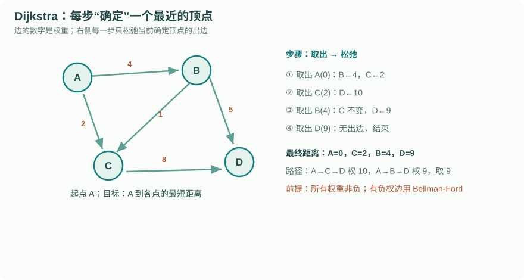
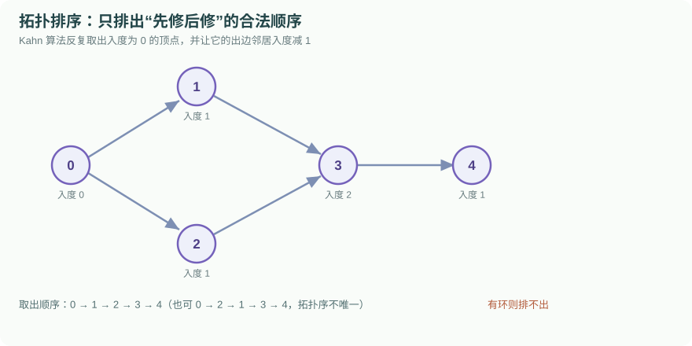
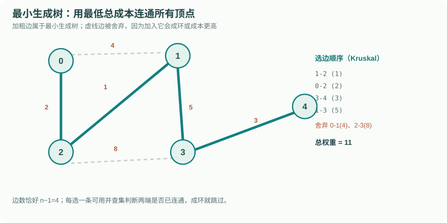

图算法：在关系网络上求最优
导航的最少时间路线、构建系统里谁先编译、光缆网怎样最省钱、项目哪一步不能拖——它们分别是同一张图上的最短路径、拓扑排序、最小生成树和关键路径。
从导航的最短路径说起
打开地图输入目的地，App 几秒内给出一条“最优”路线。它把路网建模成带权有向图：路口是顶点，道路是有向边，权重是通行时间。于是“规划路线”就是在这张巨大的图上求最短路径。
同一张图的抽象还能回答别的问题。字符串依赖、任务依赖是有向图，需要拓扑排序；给若干城市铺设光缆，需要最小生成树；项目管理里找“一步都不能拖”的活动，需要关键路径。本章把这四个算法族放在一起，重点不是背模板，而是看清每个算法的前提与它为何正确。
Dijkstra：每步确定一个最近顶点
单源最短路径是求一个起点到其他所有顶点的最短距离。Dijkstra 的做法是贪心：维护每个顶点当前已知的最短距离（未确定时为无穷大），每轮从尚未确定的顶点中取出距离最小的那个，确定它的距离，再用它松弛自己的出边。用最小堆取最小值，复杂度为 O((n + m) log n)。
为什么可以“确定就不再改”？因为所有边的权重非负：从起点到某个更远顶点的任何路径，都要先经过一段非负代价，不可能比当前已知的最近顶点更短。这条“非负”前提是算法正确性的根基，也是后面最常见的踩坑点。

import heapq
def dijkstra(graph, start): # graph[u] = [(v, weight), ...]
dist = {start: 0}
heap = [(0, start)]
while heap:
d, u = heapq.heappop(heap)
if d > dist.get(u, float('inf')):
continue # 去除旧条目：u 已用更短距离确定过
for v, w in graph[u]:
nd = d + w
if nd < dist.get(v, float('inf')):
dist[v] = nd
heapq.heappush(heap, (nd, v))
return dist逐步观察距离表
固定图同图 1，起点 A。拖动滑块查看每一次“取出最近顶点”后的距离。
负权与多源：Bellman-Ford 与 Floyd-Warshall
如果边上出现负权（比如“手续费返还”），Dijkstra 的贪心就失效了：一个看起来远的顶点可能通过一条负权边变得更近，而它已经被“确定”过，无法再修改。此时改用 Bellman-Ford：把所有边松弛 n−1 轮（任何简单路径最多 n−1 条边），每轮扫描全部边，代价 O(n·m)。如果在第 n 轮还能继续松弛，说明存在从起点可达的负权环，最短路无定义。
def bellman_ford(n, edges, start): # 顶点编号 0..n-1，edges = [(u, v, w), ...]
dist = [float('inf')] * n
dist[start] = 0
for _ in range(n - 1):
changed = False
for u, v, w in edges:
if dist[u] != float('inf') and dist[u] + w < dist[v]:
dist[v] = dist[u] + w
changed = True
if not changed: # 已收敛，提前结束
break
for u, v, w in edges: # 第 n 轮还能松 → 有负权环
if dist[u] != float('inf') and dist[u] + w < dist[v]:
return None
return dist如果要求所有顶点对之间的最短路径，Floyd-Warshall 更直接：用动态规划逐次允许新的中间顶点 k，更新 dist[i][j]。三层循环、O(n³)，适合顶点数不大（几百以内）且需要完整距离矩阵的场景。
def floyd_warshall(n, matrix):
dist = [row[:] for row in matrix]
for k in range(n): # 允许顶点 k 作为中间点
for i in range(n):
for j in range(n):
if dist[i][k] + dist[k][j] < dist[i][j]:
dist[i][j] = dist[i][k] + dist[k][j]
return dist| 算法 | 类型 | 时间 | 负权边 | 适用 |
|---|---|---|---|---|
| Dijkstra（堆） | 单源 | O((n+m) log n) | 不能 | 稀疏图，权重非负 |
| Bellman-Ford | 单源 | O(n·m) | 能（可检测负环） | 有负权边 |
| Floyd-Warshall | 多源 | O(n³) | 能（无负环） | 顶点少，需全矩阵 |
拓扑排序：给依赖排出先后
一个有向无环图（DAG）的拓扑排序是把顶点排成一条线性序列，使得每条边 u→v 中 u 都出现在 v 前面。典型场景是课程先修关系：数据结构必须在算法设计之前修。拓扑序不一定唯一，只要有环，就根本排不出合法顺序。
Kahn 算法用入度来做：先统计每个顶点的入度，把入度为 0 的顶点入队；每次取出队头加入结果，并把它的出边邻居入度减 1，减到 0 就入队。若最终结果个数少于顶点总数，说明有环。整趟只处理一次顶点和边，代价 O(n + m)。

from collections import deque
def topological_sort(graph, vertices): # graph[u] = [v, ...]
indeg = {v: 0 for v in vertices}
for u in graph:
for v in graph[u]:
indeg[v] += 1
queue = deque(v for v in vertices if indeg[v] == 0)
order = []
while queue:
u = queue.popleft()
order.append(u)
for v in graph.get(u, []):
indeg[v] -= 1
if indeg[v] == 0:
queue.append(v)
return order if len(order) == len(vertices) else None # None 即有环另一种写法是对 DAG 做 DFS，在后序（一个顶点所有子孙都已处理完）时把它加入结果，最后整体反转。两种方法都是 O(n + m)；Kahn 更容易用“结果长度”直接判断有无环，“课程表”问题（LeetCode 207）正是它的直接应用。
最小生成树：最低成本连通全网
要在 n 个城市间铺设光缆，已知任意两城市之间的成本，希望总成本最低地把所有城市连通——这就是最小生成树（MST）。生成树要求恰好 n−1 条边且无环；“最小”指总权重最小。MST 有两个等价的主流算法。
Prim 从一个顶点出发，每次选一条连接“已树集合”与“外部”的最小权重边，把外部顶点纳入树；用优先队列实现时与 Dijkstra 很像。Kruskal 先把所有边按权重排序，从小到大依次尝试，用并查集判断两端是否已连通，不连通就选中，否则跳过（加入会成环）。

def kruskal_mst(n, edges): # edges = [(u, v, w), ...]
uf = UnionFind(n)
total, chosen = 0, []
for u, v, w in sorted(edges, key=lambda e: e[2]):
if uf.union(u, v): # 两端尚未连通，选它不会成环
total += w
chosen.append((u, v, w))
return total, chosen| 特性 | Prim | Kruskal |
|---|---|---|
| 出发点 | 从顶点逐步扩展 | 从边从小到大尝试 |
| 关键结构 | 优先队列（最小堆） | 并查集 |
| 时间 | O((n+m) log n) | O(m log m)（主要是排序） |
| 适合 | 稠密图 | 稀疏图 / 边已部分有序 |
关键路径：项目里哪一步不能拖
项目管理把任务和依赖建模成一个带权 DAG：顶点是事件，边是活动，权重是持续时间——这就是 AOE 网。关键路径法要回答：“整个项目最短要多久？”以及“哪些活动一旦延误，整体就会延误？”
做法分两步：先按拓扑序正向算每个事件的最早发生时间（取所有入边中“最早 + 持续时间”的最大值）；再按拓扑逆序反向算最晚发生时间（终点的最晚时间等于它的最早时间）。如果某个事件的最早时间等于最晚时间，它就在关键路径上；这些事件对应的最长路径长度就是项目最短工期。
def earliest_finish(vertices, edges): # edges = [(u, v, duration), ...]
indeg = {v: 0 for v in vertices}
graph = {v: [] for v in vertices}
for u, v, d in edges:
graph[u].append((v, d))
indeg[v] += 1
from collections import deque
queue = deque(v for v in vertices if indeg[v] == 0)
est = {v: 0 for v in vertices}
order = []
while queue:
u = queue.popleft()
order.append(u)
for v, d in graph[u]:
est[v] = max(est[v], est[u] + d)
indeg[v] -= 1
if indeg[v] == 0:
queue.append(v)
if len(order) != len(vertices): # 有环，项目无法完成
return None
return est # est 中最大值即项目最短工期关键路径就是这张 DAG 上从起点到终点的最长路径——注意是“最长”而不是最短，因为它描述的是最早什么时候能全部结束。这一步同样需要先有拓扑序，所以它复用了上一节的结果。
适用边界与常见误区
- “Dijkstra 能处理所有最短路”：不能。出现负权边时贪心失效，应改用 Bellman-Ford（并可检测负权环）。
- “Floyd-Warshall 适合大图”：它是 O(n³)，顶点上千就会很慢；多源最短路在大图上通常改为对每个源跑 Dijkstra。
- “拓扑排序结果唯一”：不唯一。同时有多个入度为 0 的顶点时，选谁先都可以。
- “最小生成树 = 最短路径树”：不是。MST 优化的是全树总权重，最短路径树优化的是起点到各点的距离，两者目标不同。
- “算法复杂度是固定值”：上面所有 O(·) 都按邻接表计；换成邻接矩阵，Prim/Floyd 等结论会变。
带走三个判断准则
- 先看前提再看算法：Dijkstra 要求权重非负，拓扑排序要求 DAG，MST 要求图连通且无向（或有向转成生成树森林）。
- 容器决定算法的形状：最小堆→Dijkstra/Prim，队列 →BFS/Kahn，并查集→Kruskal；同一批图可以用不同结构实现同一目标。
- 复杂度不是绝对数字，而是与图的表示绑定：邻接表下 DFS/BFS/拓扑、Dijkstra 为 O(n+m) 或 O((n+m) log n)，邻接矩阵下则为 O(n²)。
继续学习与校验资料
- MIT 6.006：Weighted Shortest Paths — Dijkstra 与负权边的处理
- MIT 6.006：Minimum Spanning Trees — Prim 与 Kruskal 的切分与环性质
- Python heapq — Dijkstra 与 Prim 共用的最小堆原语
- 上一章：图基础 — 邻接表、DFS/BFS 与连通分量